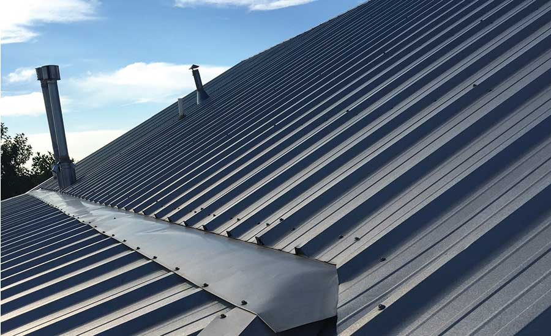

Construstanding Seam es un sistema innovador para la fabricación a la medida de cubiertas y fachadas sin traslapes, sellado herméticamente al utilizar anclajes ocultos.
La lámina es fabricada en frío a base de lámina de acero con revestimiento metálico de Aluminio (55), Zinc (43.50%) y Silicio (1.50%). Posee un recubrimiento de 150 gr/m2 de Aluminio, Zinc y Silicio en ambas caras.
es un sistema conformado en sitio, innovador de fijación oculta mediante clips sin ninguna perforación sobre la cubierta reduciendo riesgo de filtraciones. Conformado por doble lámina (superior e inferior) y un aislamiento térmico de placa de espuma rígida de alta densidad conocido como: PIR o PUR.
Lámina fabricada en frio a base de acero con revestimiento de Aluminio (55%), Zinc (43.50%) y Silicio (1.50%), posee un recubrimiento de 150 gr/m2 de Aluminio Zinc y Silicio en ambas caras, pre-pintada al horno a base de poliéster.
